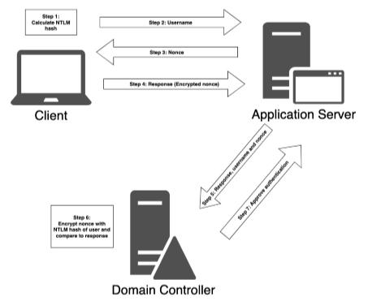

NTLM Function
1. From the users password the client caculates the NTLM hash.
2. The client sends its username to the application server it wants to authenticate to.
3. The application server sends a nonce to the client (Challenge).
4. The client sends back the nonce encrypted with its NTLM hash (Responce).
5. The application server sends the “Responce,” recieved from the client, username, and nonce to the Domain controler.
6. The domain controller, already having the NTLM hash for each username, encryptes the nonce with the NTLM hash of the assosiated username and compares that with the one recieved from the application server.
7. If the encrypted nonce's match, a message to approve authentication will be sent to the application server.